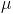
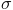

A6 Math: The Long Version
Here, we'll give you the gory math details behind the "world according to you" in answer A6. You may wish to have read read the friendly explanation under A6 first.
Neuromorphic or Non-Neuromorphic?
The model assumes AI can come in two forms: neuromorphic or non-neuromorphic. In any year T, if:
P4: Neuromorphic AI has been created before T, or
P5: Non-neuromorphic AI has been created before T, then
A6: AI has been created before T.
So to find A6, we need to find P4 and P5, then combine them.
Setting P4
P4 records whether neuromorphic AI has been created. At each year, it can say, "yes: neuromorphic AI has been created", or, "no: neuromorphic AI has not been created". The probabilities for these were calculated earlier, in A5, based on your inputs. If you'd like to learn how this was done, see the gory math details for A5.
Setting P5
P5 records whether non-neuromorphic AI has been created. This question we did not split into different parts: in Q6, you got to choose directly how probable such AI was at what time. Specifically, you got to set the parameters  and  of a lognormal distribution. These represent the mean and standard deviation of the logarithm of the number of years after the starting point. The probability density that P5 will first become "non-neuromorphic AI has been created" at time t is:

and the cumulative probability that P3 will have become "non-neuromorphic AI has been created" any time before time t is:

(If you want to know why we used a lognormal distribution, read our FAQ entry. 1950 was chosen as the zero point for the lognormal because it was the approximate beginning of serious AI work.)
Combining Both
We have the probability neuromorphic AI exists, and the probability non-neuromorphic AI exists. What we want is the probability that neuromorphic AI or non-neuromorphic AI exists. Correcting for double-counting cases where both happen, we have:
Prob(A6: AI has been created) = Prob(P4: neuromorphic AI has been created) + Prob(P5: non-neuromorphic AI has been created) - Prob(P4 and P5)
Conveniently enough, we're assuming both kinds of AI are probabilistically independent. So the probability we're looking for in the last term is the product of the individual probabilities:
Prob(A6) = Prob(P4) + Prob(P5) - Prob(P4) * Prob(P5).
That's it! We now have a probability for A6 each year. This is what you see in the graph.
Return to your calculation